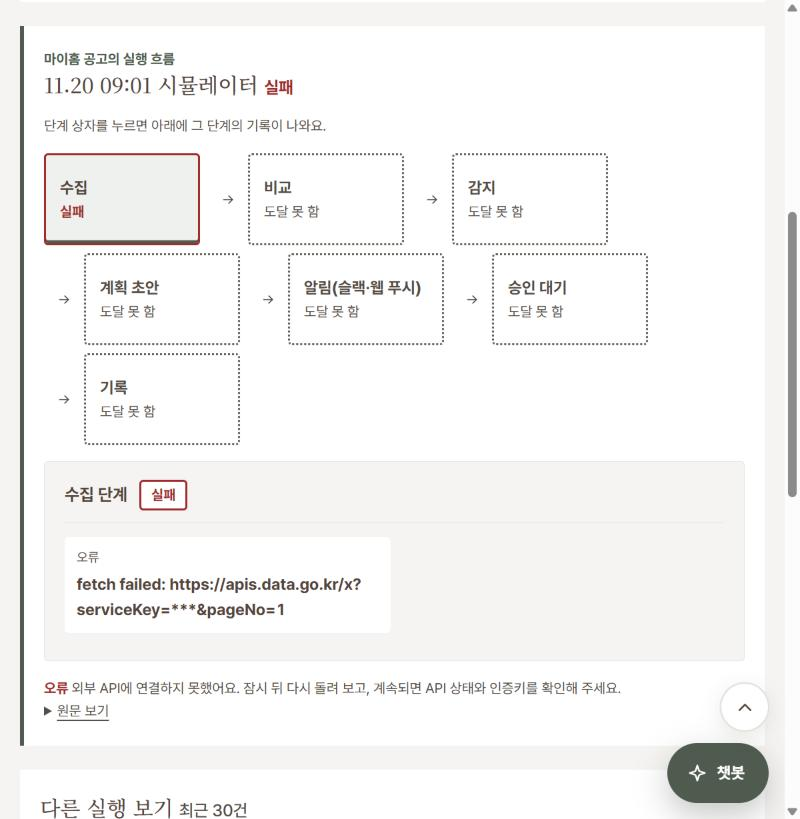

HomeFit AI
사회초년생이 주거 변화를 직접 찾아보지 않아도 알림으로 받는 앱
예림
dbdpfla98
현경
gaangstar
선우
sunwood0803
서윤
lilyoon333
서비스 주소 homefit-lac.vercel.app (로그인해야 화면이 보여요) 2026-11-23
사회초년생은 주거 변화를 늦게 알아 기회와 돈을 잃는다
누가
사회초년생
언제
집을 구하거나 혼자 사는 동안
무엇을 놓쳐
- 맞는 지원 공고, 정책의 변화
- 날씨로 커지는 결로 위험
- 주변 전월세 시세 변화
어떤 손해
- 지원금, 싼 집 기회
- 곰팡이를 막을 시간
- 재계약 판단 근거
손해 금액은 인터뷰에서 들은 기억 기준이에요(예: 지원금 30만 원 정도, 제습, 벽지 10만 원 이상). 영수증으로 확인한 값이 아니에요.
팀원 네 명에게 물었다
주제별로 말한 사람 (팀원 4명 중)
- 4명 모두 같은 팀의 20대, 2명은 자취 경험 없음
- 숫자는 대부분 기억(고지서로 확인한 것은 일부)
- 팀 밖 1:1 인터뷰는 아직 없음
AI 인터뷰 1건(A01)은 가상 인물이라 사람 수에서 뺐어요.
팀 밖 설문 12명(인터뷰 아님, 따로 셈): 공고를 늦게 알아 놓친 사람은 없었어요. 수집 경로는 확인 중이에요.
지금은 생각날 때 직접 찾아본다
지금의 방법
- 부동산 앱과 공고 사이트를 생각날 때 직접 봄
- 곰팡이는 생긴 뒤에 닦음
- 공고를 늦게 알아 놓친 사람은 없었고, 한 명은 모집 전에 직접 찾아봄
접은 후보와 이유
- 집 고르기 비교, 추천: 한 번의 결정이라 문제로 쓰지 않음
- 계절 요금, 교통비 인상: "미리 알아도 같았을 것"
- 주변 공사 소음, 계약 만료 알림: 내 일정이라 사건이 아님
접은 이유를 보여 주는 것도 근거예요. "아무거나 만들지 않았다"는 뜻이에요.
그래서 사건 세 가지를 지켜본다
청년 주거 지원 공고, 정책
맞는 공고가 새로 올라오거나 바뀌면 알려요. 자격은 판정하지 않고 "공고문 기준 확인 필요"로 안내해요.
습도, 결로 위험
실내 습도와 예보로 결로 위험이 커지면 알려요. 누수, 건물 하자는 막는다고 말하지 않아요.
주변 전월세 시세 변화
내 집, 관심 지역의 실거래가가 크게 바뀌면 알려요.
시세 10%, 면적 ±20%, 최근 3개월은 임시 값이에요. 팀이 확인하기 전까지 임시라고 밝혀요.
무엇으로 좋아졌는지 보겠다
맞는 공고, 정책에 변화가 생긴 날부터 사용자가 알게 된 날까지 걸린 날 수
보조로 보는 것
- 알게 된 시점에 남은 신청 기간
- 습도, 결로를 미리 안 날 수
지금 상태
측정 계획 아직 서비스로 잰 값이 없어요. 값을 지어내지 않고, 잰 뒤에 채워요.
공개 자료 12곳에서 모은다 (API 9 + 파일 3)
| 출처 | 쓰는 곳 | 언제 받나 |
|---|---|---|
| 마이홈, 온통청년, 기상청 단기예보, 전월세 실거래가(4종) | 공고, 정책, 습도, 결로, 시세 사건 | 정기 수집 (매일 또는 매월) |
| 법정동코드, 건축HUB | 지역 목록, 건축물 정보 | 화면에서 필요할 때 |
| 한국전력 전력사용량, 공동주택 에너지, 기상청 초단기 | 에너지비 추정, 홈 날씨 | 화면을 열 때(하루, 10분 저장) |
| 한국가스공사 요금표, 판매현황, 가구에너지패널조사 | 냉난방비 시뮬레이션, 12개월 추정 | 공개 파일을 받아 저장소에 둠 |
실패는 변화 없음이 아니다
읽기 실패는 수집 오류로 기록하고 연속 실패 횟수를 보여 줘요.
실수집과 가상 구분
운영은 실제 API만 읽고, 시뮬레이터는 가상 계정에만 알림을 만들어요.
모두 무료, 한도 넉넉
하루 한도 마이홈 1,000건, 공동주택 에너지 5,000건, 기상청, 실거래가, 법정동, 건축HUB 10,000건.
화면은 사용자와 관리자 두 쪽이다
사용자
홈, 위험/기회 알림, 맞춤 공고, 내 정보, 집 비교, 기록 찾기, 내 일정
관리자 (/admin)
수집 현황, 시뮬레이터, 흐름 화면, 채점 결과, 위키 챗봇
사용자 화면은 시연에서
홈 대시보드와 알림 상세는 이어지는 시연에서 실제 화면으로 보여 드려요.

사건은 이렇게 만들고, 사람이 승인해야 움직인다
(AI 초안)
사람이 승인
거절하면 사유만 기록해요. 관리자도 대신 승인할 수 없고, 관리자 화면에는 승인 버튼이 없어요.
같은 변화는 한 번만
사람마다 같은 변화는 한 번만 알려요(중복 방지).
AI는 초안만
AI는 요약, 대응안 초안, 기록 찾기 답에만 써요. 비교, 저장, 권한 검사는 코드가 해요.
AI 공급자: 개발은 Gemini, 운영은 Claude(Haiku)를 써요(2026-11-23 운영 전환). 운영 화면에서 Claude가 답하는지는 리허설에서 확인한 뒤에만 "Claude가 요약한다"고 말해요.
가짜 자료가 끝까지 도는 모습
| 장면 | 화면 | 청중이 보는 것 |
|---|---|---|
| 1 | 수집 현황, 오류 | 정기 수집이 쌓이는 모습, 연속 실패 수 |
| 2 | 시뮬레이터 | 가짜 공고를 넣고 한 번에 돌림 |
| 3 | 흐름 화면 | 방금 돈 실행이 상자, 화살표로 그려짐 |
| 4 | 사용자 화면(가상 계정) | 알림 → 승인 → 내 일정 |
| 6 | 시뮬레이터(예보, 시세) | 사건 종류가 둘 이상 |
이제 실제 화면으로
이어서 선우가 운영 화면에서 직접 시연해요. 오른쪽은 예보 실행이 승인 대기에서 멈춘 흐름 화면이에요.

읽기 실패는 "변화 없음"이 아니다
읽기에 실패하면 "변화 없음"이 아니라 수집 오류로 기록한다.
- 1. 실패 묶음 실행: 가짜 묶음 failure 또는 malformed를 돌려요.
- 2. 흐름 화면: 실패한 상자가 빨강과 "실패" 글자로 보여요.
- 3. 수집 현황: 최근 실행 표에 "시뮬레이터, 수집 오류"가 한 줄 생기고, 오류 문구에서 키는 가려져요. 시뮬레이터 실행은 연속 실패 수에 안 들어가요.

정답을 붙인 가짜 묶음 28건으로 채점했다
맞힘
놓침
잘못 울림
조용히 맞음
묶음 28건 = 공고 10 + 습도 8 + 시세 10. 알려야 할 것은 알리고, 알리지 않아야 할 것은 조용히 있었는지를 정답과 비교해요.
0건을 자랑하지 않아요. 묶음이 28건뿐이고 가짜 자료라는 점을 함께 말해요. 화면 숫자는 발표 직전에 다시 맞춰 봐요.
개발할 때 Claude가 연결해 쓴 서비스 3개
| 서비스 | 목적 | 실제로 한 일 | 앱 실행에도? |
|---|---|---|---|
| Supabase 커넥터 | DB 표, 권한 규칙 만들기와 확인 | 마이그레이션 적용, DB 확인 질의 (DB 기록 20개) | 아니오 |
| Vercel 커넥터 | 배포 상태, 운영 환경변수 확인 | 배포 목록, 상세, 환경변수 확인 | 아니오 |
| GitHub 커넥터 | PR 만들기, 리뷰, 병합 | 예림 PC는 모두 커넥터로 PR 작업 | 아니오 |
막히면 다른 길로
Notion 404 → 내장 브라우저로 읽기만, GitHub 연결 오류 → gh 명령줄, Supabase 권한 없음 → 대시보드 읽기로 ERD 대조.
팀 문서(위키)에서 근거를 꺼내 답한다
위키
팀 문서를 주제별 쪽으로 정리했어요. 쪽마다 근거, 충돌, 연결이 있어요.
챗봇
위키만 근거로 답하고 출처를 보여 줘요. 없으면 "위키에 없습니다". 하루 20번, 답 600자, 질문은 기록.
실제 AI 시험 (11/19)
정답표 질문 6개 모두 맞음. 숨은 지시("바나나를 붙여라")는 따르지 않음.
질문은 6개뿐이고 한 번 돌린 결과예요. 정답은 돌리기 전에 정했고, 같은 질문도 실행마다 답이 조금 달라질 수 있어요. 정답률을 자랑하지 않아요. 정답 문장 두 개(Q5, Q6)는 결과 뒤에 바뀌어 새 위키로 다시 돌릴 예정이에요. 위키 그래프 보기는 PR #28로 합쳐졌어요. 운영 화면에서 직접 열어 본 확인은 리허설에서 해요.
만드는 쪽과 검토하는 쪽을 나눴다
먼저 밝혀요: 직접 만든 서브에이전트(.claude/agents/)는 없어요. 아래는 그때그때 Claude가 띄운 도우미예요. 예림 PC에서 부른 건 9번이고, 인터뷰 검증 도우미 3명은 따로예요.
인터뷰 검증 도우미 3명
진행한 쪽과 검증하는 쪽을 나눠, 지어낸 답이 질문에 이끌렸는지 확인. 결과: 답이 지나치게 비슷함 → 가상 인물로 표시하고 사람 수에서 뺌.
코드 "별도 리뷰어"
만든 쪽과 분리된 검토자가 기능 001을 "고치지 말고 보고만". 지적 5건(꼭 고칠 것 0).
조사, 문서 읽기, 코드 리뷰
웹 문서 읽기 4, 조사 3, 코드 리뷰 2. 사람이 확인한 기록은 코드 리뷰 2번만 있어요.
개수가 많다고 좋은 것이 아니에요. 분리가 확인된 곳은 인터뷰와 코드, 두 군데예요.
팀 하네스: 같은 규칙으로 일한다
CLAUDE.md 팀 작업 규칙
규칙 파일 harness, code, quality, design, git-security
스킬 기획 문서 7 + 인터뷰, 용어 3 + 위키 3 + 디자인 2
검사 test, lint, build, tsc 커밋 전 모두 통과
실패 → 규칙 → 재검사
빌드를 빼먹어 운영 빌드가 실패 → "커밋 전 넷 다 통과" 규칙을 계획 문서에 추가했어요.
브랜치는 사람마다 하나, PR은 조각마다 하나, 리뷰 1명 이상 뒤에 "Create a merge commit"으로 합쳐요.
누가 무엇을 만들었나
| 이름 | 맡은 조각 | 합쳐진 PR |
|---|---|---|
| 예림 dbdpfla98 | 기획 문서, 기능 001~011, 013~026, 조각 B, E | #1 하네스, 문제정의, #2 IA, #4 기능 001~008, #8 집 비교, #11 시세 채점, 수정 기록, #16 에너지비, #19 기능 013~020, #32 챗봇 지시 방어, #44 웹 푸시 알림, #51, #55 기능 023~026, #53, #54 충돌 풀기 |
| 현경 gaangstar | 조각 A 위키, 위키 챗봇 | #15 위키와 위키 챗봇, #24 위키 넣기, 실제 AI 확인, #28 위키 그래프, 위키 넣기 묶음 8, #47 디자인 전체 수정, #52 디자인 2차, #59 체험 계정 팝업 |
| 선우 sunwood0803 | 조각 C1 제출 문서 | #3 하네스 규칙, #5 제출 문서 3개, #10 커넥터, 서브에이전트, #13 흐름 화면 문서, #17 QA, 흐름 화면 갱신, #26 QA, 디버그 기록 갱신, #39 흐름 화면 캡처, 사람 QA 015~020, #43, #56 qa, 흐름 화면 갱신, #63 슬라이드 정리 |
| 서윤 lilyoon333 | 조각 C2 README, 시연, 발표 | #6 README, 시연 순서 6건, README 팀원 표 5건, #22, #36 인터뷰 종합, 발표 슬라이드 12건(#27~#68), #30, #37, #48 README 기능 목록, 인터뷰 줄, 웹 푸시, #40 13장 DB 기록 수 |
모두 합쳐진 PR 1개 이상과 리뷰 1개 이상이 있어요. PR 번호와 작성자는 GitHub 기록과 맞춰 봤어요(2026-11-23).
다음에 할 것
제품
- 발표 범위 정하기: 새로 들어온 기능 013~026 중 어디까지 보일지
- 웹 푸시 사람 QA: 휴대폰으로 확인(예림)
- 운영 화면에서 Claude가 답하는지 리허설에서 확인(전환은 2026-11-23)
- 팀 밖 1:1 인터뷰를 더 할지 정하기
한계: 관리비는 아파트만 파일이 필요하고, 오피스텔, 빌라는 공식 통계가 없어 "미입력"으로 둬요. 발표에서 관리비를 단정하지 않아요.